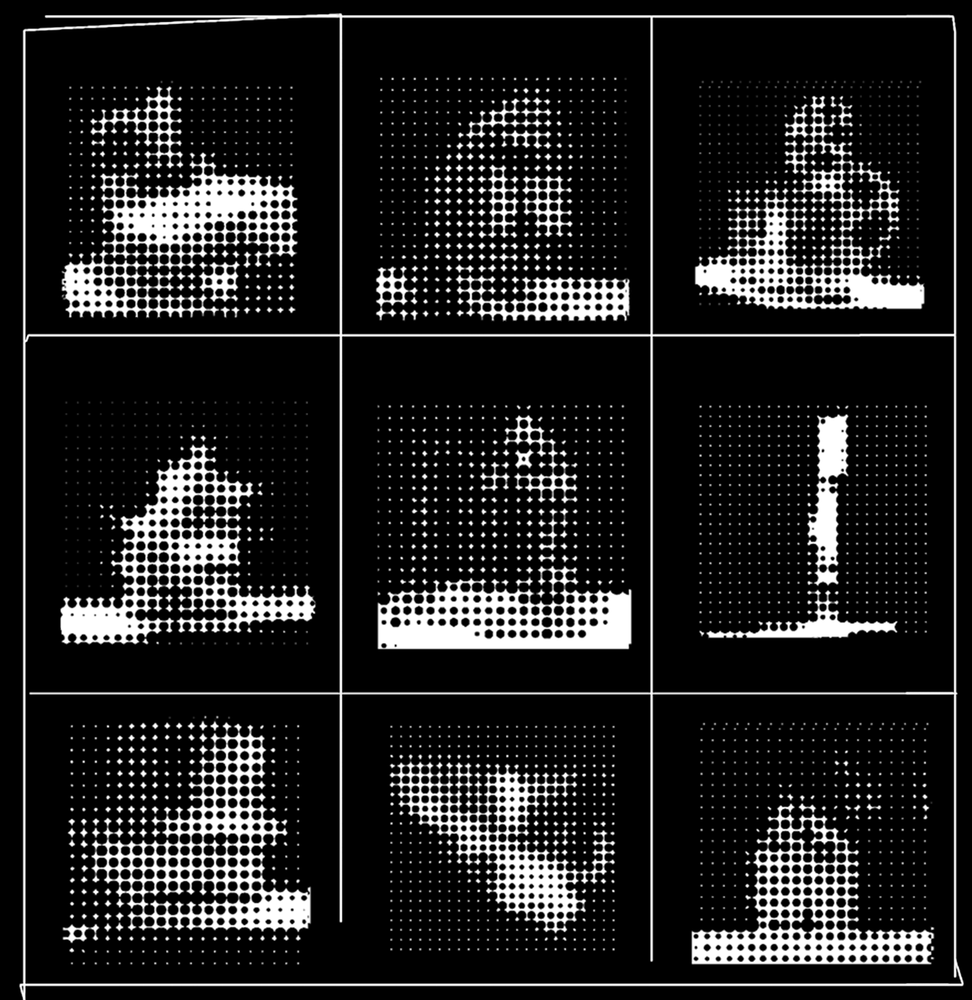

Unconventional Archives
This paper examines how the meaning and function of the archive have shifted in the context of the digital age. Once understood as a stable and institutionally controlled physical space containing reliable records, archives have transformed into accessible systems that exist through digital technologies and online platforms. By examining archival theory and contemporary artists that engage with archival material, this paper argues that traditional archives cannot be understood as a neutral or objective source of historical truth. Instead, they operate as systems of power that shape historical narratives and determine which voices are preserved.
While the internet has enabled broader access and participation in archival creation, it produced instability, algorithmic control and the loss of material aura. These conditionals challenge the foundational concepts of archives such as permanence, authority and objectivity. Through the analysis of case studies, this research shows how artists respond to these limitations by developing unconventional archives. Instead of replicating traditional archival models, artists introduce additional narratives, experiment with viewer experience and technologies, redistribute authorship and treat the archives as a separate medium. Unconventional archives thus offer a more accurate reflection of informational society that relies on constant data production and circulation. These archives have adapted to the modern needs, and created space for artistic and cultural expression.
Read full thesis here: link
